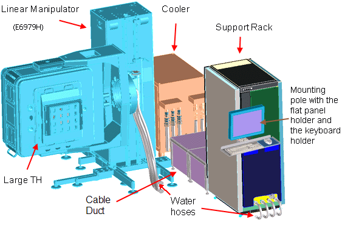
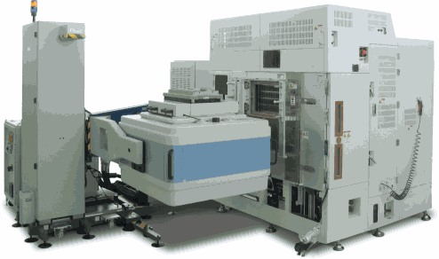
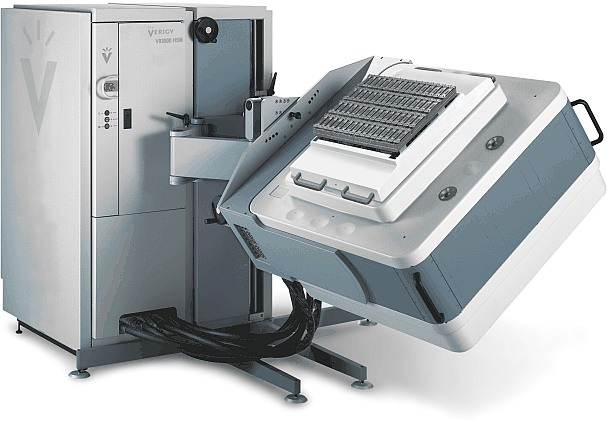

Large test head (LTH) system
The HSM test systems with a large test head (LTH) typically features a linear manipulator which allows you to set up a test cell with a smaller foot print than would be possible using the default manipulator (E6979F).
The figure below shows a typical floor plan arrangement of a test system featuring the manipulator E6979H. The system comprises:
- LTH mounted on a linear manipulator E6979H
- Standard support rack
- A cooler
The mounting pole, with the flat panel holder and the keyboard holder, is attached to the support rack, the system controller is hidden inside the support rack. The water hoses are routed underneath the support rack to the test head. They are protected by a cable duct. In this arrangement, the components of the LTH test system use up as little floor space as possible and provide an ergonomic design with the handler and test system consoles close to one another.

During testing, the test head and the handler are connected through a specially designed test fixture. The test fixture carries the cabling and mechanics to translate the pogo pin DUT interface of the test head to the device DUT board. The figure below shows the HSM test system with the test head rotated into horizontal position with the test fixture facing up.

Optionally, you can install the LTH HSM test system with the E6979F manipulator instead of the E6979H.

The LTH HSM test systems are high-volume manufacturing test solutions for high-speed memories. They offer at-speed I/O and memory core access testing of up to 3.6 Gbps in a single insertion (more than 3.6Gbps with double clocking). Target applications are XDR, DDR2/3, GDDR3 and GDDR4 with many test sites in parallel.
The LTH HSM solution provides the following features:
- Maximum number of pins:
- Up to 2048 digital single-ended pins
- Up to 1024 differential pins.
- Supported digital channels
HSM test systems support HSM digital channel cards only.
Further, HSM Series test systems support DC Scale cards. For more details see DC Scale power supplies.
- Support rack
The LTH HSM test systems are configurable with only one standard support rack. There is no option for more support racks available. The standard support rack provides AC/DC power conversion and power distribution for the test head. It also provides space for the system controller and an attachment facility for the mounting pole, with the flat panel holder and the keyboard holder. In a test cell arrangement, cooling water from the cooling unit can be passed through the bottom of the support rack to the test head.
The standard support rack is connected to the cooling unit by four flexible hoses. A cooler interface cable (CIF) connects the cooler with the system controller.
- High-performance test fixture
Testing high-speed memory devices at speed, a high-performance test fixture is necessary. These test fixtures are custom built to fit specific customer needs.
They currently support up to 64 sites for parallel testing and are not field-supported products.
- DUT boards
- Internal adjustment (calibration)
To internally adjust (calibrate) a HSM series test system, a calibration unit (E8006A) in conjunction with the E7996C DUT board is used for internal adjustment (automatic calibration) up to the pogo pins.
Functional changes
- Introduced before SmarTest 6.3.2